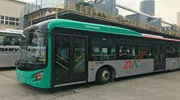
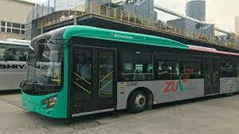

.jpg)
.jpg) 

TransPeshawar or Zu Peshawar is a bus rapid transit system in Peshawar, capital of Pakistan's Khyber Pakhtunkhwa (KP) province. TransPeshawar BRT system consists of two parts: the first encompasses an east–west corridor served by 32 stations on a dedicated lane for exclusive use by buses, while the second part consists of a network of feeder routes in which buses can enter and exit the system to travel on city streets. The system was inaugurated on August 13, 2020, and is the fourth BRT system in Pakistan.
In 2013, the Government of Khyber Pakhtunkhwa requested technical support from the Cities Development Initiative for Asia to improve Peshawar's chaotic, mismanaged, and dilapidated urban transportation network.[2] In 2017, the CDIA completed the Urban Transport Pre-Feasibility Study that devised a 20-year urban transport plan, with a 10-year action plan. The CDIA studied two corridors, an east–west corridor, and a north–south corridor and recommended that the east–west corridor be constructed first,[2] along Peshawar's east–west axis along the Grand Trunk Road. Construction of the project, under the Peshawar Development Authority (PDA), began in 2017,[3] and was executed by the Peshawar Development Authority. The system was inaugurated in August 2020.